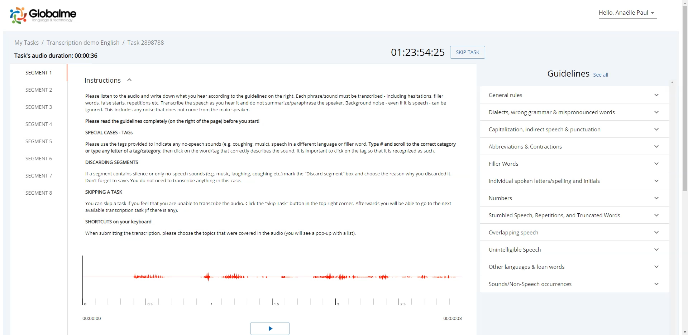
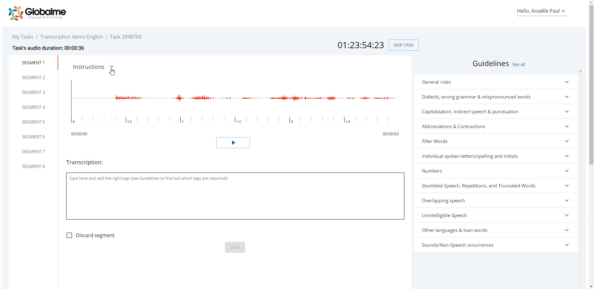
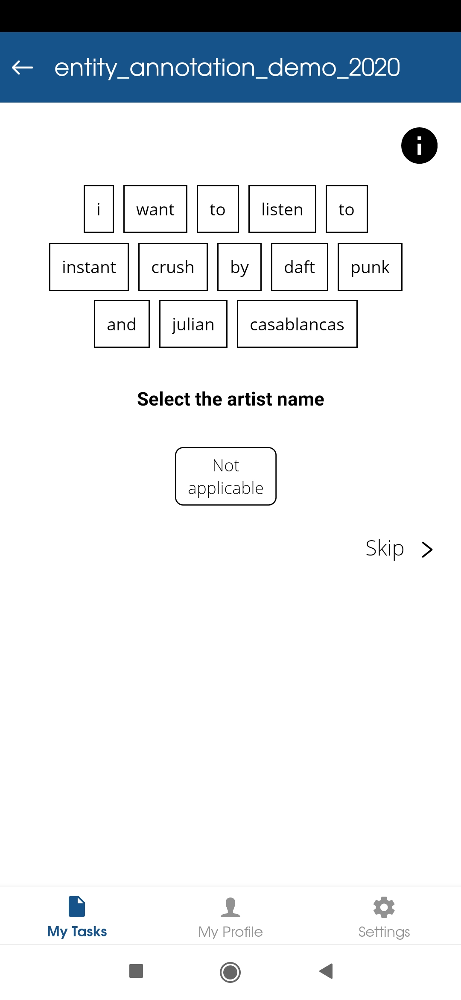
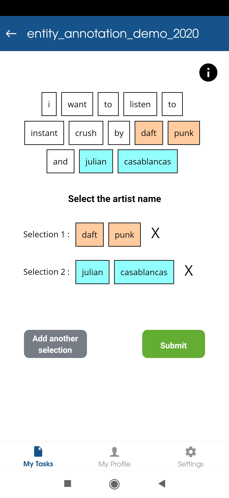

My Work
As a Product Specialist, then Product Manager at Globalme, my focus was on Globalme’s Robson app: a platform for collecting and processing Artificial Intelligence text and speech training data.
Aside from supporting the enhancement of the existing product, I owned the development, launch and lifecycle of two new modules: a transcription (web-based) platform and a text annotation (mobile app) tool.
Crowdsourcing transcription platform - Globalme
The platform was used to transcribe over 600 hours of audio in 5 different languages and scripts.
Notable challenges:
-
Design from scratch both end-user and back-end workflows while accounting for the constraints on the project and client-level.
-
Create a user-friendly one-screen platform that simplifies transcription work while remaining efficient.
-
Make sure the platform can adapt to multiple languages and scripts, and to users owning local keyboard with various layouts.
My role:
On a tight 8-week timeline from ideation to shipping:
- Map out the scope by conducting user research (internal and external users) and benchmark on existing products
- Conceive the user flow in collaboration with the operational, technical and development teams (end-user and internal admin platforms), accounting for operational requirements while ensuring usability
- Design the platform (wireframes, user journey) and validate the initial concept with the stakeholders
- Create user stories and prioritize the backlog
- Collaborate with the development team to ensure sprint deliveries
- Conduct rounds of manual testing on all facets of the platform
- Collaborate with the technical and project teams to create an end-to-end workflow to ensure timely and quality client deliveries
- Own the training of the team on the new features
- Take a user-centered and data-driven iterative approach by collecting feedback and analyzing usage data in order to enhance the product
Quick view of the final product:
The chosen approach was to focus on the UX and keep the design simple for the first iterations, in order to provide a functional product within the defined timeline.

Transcription platform

Transcription platform
Text annotation mobile app - Globalme
The goal was to create a tool to annotate text elements through crowdsourcing. After launch, the tool was used to annotate about 40,000 tasks at the end of 2019.
Key achievements:
-
Simplify complex annotation tasks and guidelines to create a mobile and user-friendly flow
-
Meet the business target in terms of cost-efficiency by creating an innovative back-end workflow
Key contributions:
-
Work in close collaboration with client and project team to clarify the expected output and create a workflow that satisfies both usability and cost-efficiency criteria.
- Collaborate closely with the development team and the architect to design the back-end workflow.
-
Design the user-end and admin UX and build wireframes. Consult with stakeholders to validate the concept.
-
Lead the development sprints and conduct testing on all product features.
-
Own the team training on the product.
-
After launch, monitor bugs and issues, collect feedback and prioritize enhancements.
Quick view of the final product:

Text annotation module

Text annotation module

{kind=link}
{kind=link}
{kind=link}
{kind=link}